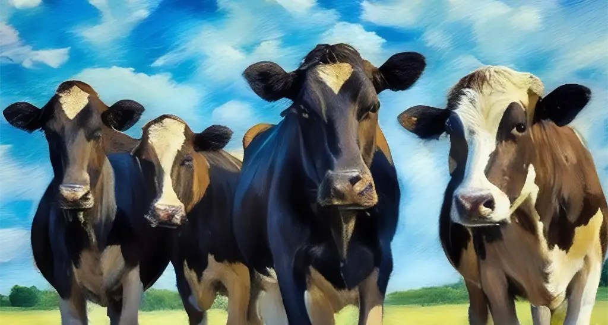

About Emily
Emily was born in Orem, Utah on June 5th 2002.
Where did she start?
Growing up, she would trace images and fill in the colors for fun. Sometimes friends would make requests for images they wanted recreated.
It took until she was 16 to start making her own work. She started by experimenting with polaroids. Through this experimentation, she made polaroids of her friends. Two of these polaroids would be her first two works in a professional gallery.
Leah and Monson 2020
Call to commission Emily at 123-456-7890- Existential Cows
- Are your local cows contemplating the meaning of life? Do you want that feeling represented in a tiny watercolor painting? Call me!
- Horse Drama
- Are those two horses on the side of the road in the middle of a nasty divorse? I'll paint it for you!
- Crazy Cat
- Now I know the cats in your life are kinda crazy! I will draw them!